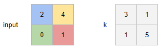
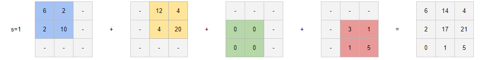

Layers#
Layer in torch is some transformation with some inputs and some outputs.
import torch
from torch import nn
from math import prod
To perform a layer transformation on the tensor X, simply use the syntax layer(X).
Linear#
The torch.nn.Linear layer performs the following operation:
Where:
\(l\): number of inputs
\(k\): number of outputs
\(n\): number of input samples
\(X_{n \times l}\): input tensor
\(\omega_{k \times l}\): weight matrix of the layer
\(b_k\): bias vector of the layer
Find out more:
Corresponding page in the official documentation.
Special page on this website.
The following cell defines a linear layer and the appropriate input for it.
in_features = 5
out_features = 3
linear = nn.Linear(
in_features = in_features,
out_features = out_features
)
X = torch.rand(10 ,in_features)
The following cell applies the Torch layer to the input data.
linear(X)
tensor([[-0.1886, -0.7310, -0.0978],
[-0.3230, -0.8067, 0.0371],
[-0.3204, -0.9425, 0.0208],
[-0.2285, -0.7381, -0.0097],
[-0.3597, -0.7659, -0.1116],
[-0.2014, -0.8315, -0.2646],
[-0.2403, -0.7090, 0.0276],
[-0.3010, -0.9064, -0.3029],
[-0.1405, -0.6946, -0.1152],
[-0.3152, -0.5994, 0.0664]], grad_fn=<AddmmBackward0>)
And the same result using algebraic operations.
X@linear.weight.T + linear.bias
tensor([[-0.1886, -0.7310, -0.0978],
[-0.3230, -0.8067, 0.0371],
[-0.3204, -0.9425, 0.0208],
[-0.2285, -0.7381, -0.0097],
[-0.3597, -0.7659, -0.1116],
[-0.2014, -0.8315, -0.2646],
[-0.2403, -0.7090, 0.0276],
[-0.3010, -0.9064, -0.3029],
[-0.1405, -0.6946, -0.1152],
[-0.3152, -0.5994, 0.0664]], grad_fn=<AddBackward0>)
Dropout#
A dropout layer randomly sets some components of the input tensor to zero with a given probability \(p\). During training, the remaining non-zero components are scaled by a factor of \( \frac{1}{1-p}\) to prevent signal attenuation. Formally, if we start with a tensor \(x_i\), where \(i \in \mathbb{N}^k\) represents the indices of the \(k\)-dimensional tensor, the output after applying dropout is given by:
where \(p_i\) is sampled from a Bernoulli distribution with parameter \(p\), i.e., \(p_i \sim \text{Bernoulli}(p)\).
Find out more in the specific page.
This example demonstrates the transformation of a tensor after passing through a dropout layer.
torch.manual_seed(111)
dropout_layer = nn.Dropout(p=0.3)
tensor = (torch.arange(3 * 3, dtype=float) + 1).reshape((3, 3))
print("Original tensor:")
print(tensor)
print()
print("Dropout result:")
print(dropout_layer(tensor))
Original tensor:
tensor([[1., 2., 3.],
[4., 5., 6.],
[7., 8., 9.]], dtype=torch.float64)
Dropout result:
tensor([[ 1.4286, 2.8571, 0.0000],
[ 5.7143, 0.0000, 8.5714],
[10.0000, 0.0000, 12.8571]], dtype=torch.float64)
Normalization layers#
Set whose main purpose is to normalize input data.
Normlization type |
Layers |
|---|---|
Batch normalization |
|
|
|
|
|
Layer normalization |
|
Instance normalization |
|
|
|
|
Find out more in specific page.
As an example, consider the batch normalization layer. The input data is generated in the following cell:
example = torch.arange(20, dtype=torch.float).reshape(4, 5)
example
tensor([[ 0., 1., 2., 3., 4.],
[ 5., 6., 7., 8., 9.],
[10., 11., 12., 13., 14.],
[15., 16., 17., 18., 19.]])
This cell applies batch normalization to the tensor under consideration:
torch.nn.BatchNorm1d(num_features=5)(example)
tensor([[-1.3416, -1.3416, -1.3416, -1.3416, -1.3416],
[-0.4472, -0.4472, -0.4472, -0.4472, -0.4472],
[ 0.4472, 0.4472, 0.4472, 0.4472, 0.4472],
[ 1.3416, 1.3416, 1.3416, 1.3416, 1.3416]],
grad_fn=<NativeBatchNormBackward0>)
Thus, we obtained a matrix where the input is normalized by columns.
Convolutional#
Convolutional layers are implemented in Torch using the classes torch.nn.Conv1d, torch.nn.Conv2d and torch.nn.Conv3d.
Consider the example of an nn.Conv1d layer. Suppose we want to perform convolutions with a two-dimensional kernel on a one-channel sequence, producing a single-channel output. The following cell defines and prints the parameters of the Conv1d layer.
show_conv = nn.Conv1d(
in_channels=1,
out_channels=1,
kernel_size=2
)
with torch.no_grad():
show_conv.weight = nn.Parameter(
torch.arange(
prod(show_conv.weight.shape), dtype=torch.float
).reshape_as(show_conv.weight) + 1
)
show_conv.bias = nn.Parameter(torch.tensor([0.]))
print("Weight")
display(show_conv.weight)
print("Bias")
display(show_conv.bias)
Weight
Parameter containing:
tensor([[[1., 2.]]], requires_grad=True)
Bias
Parameter containing:
tensor([0.], requires_grad=True)
Here is an example of data that can be processed using the layer declared above.
samples_count = 5
channels_count = 1
sequesnce_lenth = 5
data = (
torch.arange(
samples_count * channels_count * sequesnce_lenth,
dtype=torch.float
)
.reshape([samples_count, channels_count, sequesnce_lenth])
)
data
tensor([[[ 0., 1., 2., 3., 4.]],
[[ 5., 6., 7., 8., 9.]],
[[10., 11., 12., 13., 14.]],
[[15., 16., 17., 18., 19.]],
[[20., 21., 22., 23., 24.]]])
Here are 5 samples from a series of 5 elements, each with one input channel.
show_conv(data)
tensor([[[ 2., 5., 8., 11.]],
[[17., 20., 23., 26.]],
[[32., 35., 38., 41.]],
[[47., 50., 53., 56.]],
[[62., 65., 68., 71.]]], grad_fn=<ConvolutionBackward0>)
Check if the computation for some element matches our expectation:
Where:
\(x_{ij}\): \(j\)-th element of the sequence of the \(i\)-th sample.
\(x'_{ij}\): \(j\)-th element of the output of the \(i\)-th sample.
\(w_i\): \(i\)-th weight of the layer under consideration.
\(b\): bias of the layer under consideration.
Inverse convolution#
Inverse convolution allows upsampling of an image and passing it through learnable parameters.
We’ll describe the idea visually:
Suppose we have an input tensor input and a kernel k.

The kernel is multiplied by each pixel of the input, and the result affects the corresponding part of the output.

In torch, inverse convolution is implemented with the classes torch.nn.ConvTranspose1d, torch.nn.ConvTranspose2d, and torch.nn.ConvTranspose3d.
The following example reproduces the scenario shown in the picture. The next cell defines the input exactly as in the example:
input = torch.tensor(
[[[2, 4],
[0, 1]]],
dtype=torch.float
)
input
tensor([[[2., 4.],
[0., 1.]]])
The next cell creates a torch.nn.ConvTranspose2d layer and initializes it in the same way as the kernel from the example.
conv_traspose = torch.nn.ConvTranspose2d(
in_channels=1,
out_channels=1,
kernel_size=2,
bias=False
)
kernel = next(iter(conv_traspose.parameters()))
kernel.data = torch.tensor(
[[3, 1],
[1, 5]],
dtype=torch.float
).reshape_as(kernel.data)
next(iter(conv_traspose.parameters())).data
tensor([[[[3., 1.],
[1., 5.]]]])
The last cell shows the result of applying the layer to the input data.
conv_traspose(input)
tensor([[[ 6., 14., 4.],
[ 2., 17., 21.],
[ 0., 1., 5.]]], grad_fn=<SqueezeBackward1>)
It’s totaly same as showed in the example.
Pooling#
Pooling layers aggregate different subsets of an array according to a specified function.
Pooling layers are counted below:
Agregation |
Layers |
|---|---|
Maximum |
|
|
|
|
|
Average |
|
|
|
|
The following cell demonstrates the application of torch.nn.MaxPooling on a vector. Pooling is primarily designed for convolutional networks, so it is applied along the channels, which is the outermost dimension of the input. Therefore, an extra dimension is added to the input.
input = torch.arange(10, dtype=torch.float16)[None, :]
print("Input")
print(input)
output = torch.nn.MaxPool1d(kernel_size=3)(input)
print("Output")
print(output)
Input
tensor([[0., 1., 2., 3., 4., 5., 6., 7., 8., 9.]], dtype=torch.float16)
Output
tensor([[2., 5., 8.]], dtype=torch.float16)
As a result, the values were computed as follows:
\(w_1' = \max(w_1, w_2, w_3) = 2\).
\(w_2' = \max(w_3, w_4, w_5) = 5\).
\(w_3' = \max(w_6, w_7, w_8) = 8\).
Where:
\(w'_i\) is the \(i\)-th element of the output.
\(w_i\) is the \(i\)-th element of the input.
Note that the last element was skipped because it couldn’t form a complete kernel.
Recurrent layers#
Recent layer realized in Torch with the torch.nn.RNN class. Find out more in the special page.
Latest layer implemented in Torch with the torch.nn.RNN class.
X = torch.randn(10, 5, 3)
So, such input can be processed with input_size=3 and an arbitrary dimensionality of the hidden state - for example, 4.
rnn = torch.nn.RNN(input_size=3, hidden_size=4)
In practice, obtaining all intermediate hidden states of the input sequence is convenient for training the model. An instance of torch.nn.RNN returns both all hidden states and the final state. The corresponding dimensions are printed in the following cell.
output, h_n = rnn(X)
print(output.shape)
print(h_n.shape)
torch.Size([10, 5, 4])
torch.Size([1, 5, 4])
Actually, the second output of the layer’s forward pass is the same as the last element in the sequence of intermediate hidden states:
output[-1] == h_n
tensor([[[True, True, True, True],
[True, True, True, True],
[True, True, True, True],
[True, True, True, True],
[True, True, True, True]]])
Activation functions#
Activation functions essentially apply a specific function to each element of the input tensor. Everything is quite simple. The only interesting aspect here is the inplace parameter of the layer. It determines whether the layer should modify the input tensor in place or return a transformed tensor as a new one.
As an example, consider ReLU with different options for this parameter. The following cell creates the activations we’ll use and the tensor to which we’ll apply the activations.
simple_activation = torch.nn.ReLU()
inplace_activation = torch.nn.ReLU(inplace=True)
input = torch.randn(3, 3)
input
tensor([[ 0.9608, 0.7092, -0.0559],
[ 0.8391, -1.7846, -2.2366],
[ 1.2297, 0.1288, 0.1447]])
After applying the activation with inplace=False, the input tensor still retains its original generated values.
simple_activation(input)
input
tensor([[ 0.9608, 0.7092, -0.0559],
[ 0.8391, -1.7846, -2.2366],
[ 1.2297, 0.1288, 0.1447]])
However, inplace_activation modified the input tensor according to the ReLU transformation.
inplace_activation(input)
input
tensor([[0.9608, 0.7092, 0.0000],
[0.8391, 0.0000, 0.0000],
[1.2297, 0.1288, 0.1447]])
Flatten/unflaten#
The torch.nn.Flatten layer merges some dimensions into a single dimension. Conversely, torch.nn.Unflatten reshapes a specified axis with the specified dimensionality. Check more in the specific page.
The following example creates array that we’ll use as example. You can consider it as 3 three dimentional samples.
input = torch.arange(81).reshape([3,3,3,3])
input.shape
torch.Size([3, 3, 3, 3])
Now lets apply the default torch.nn.Flatten to the array from the previous cell.
x = torch.nn.Flatten()(input)
x.shape
torch.Size([3, 27])
It seems intuitive to get the same array but with one-dimensional observations.
Now we can revert everything with torch.nn.Unflatten — we specify the second dimensionality to be unflattened and transform it back into 3-dimensional tensors.
output = torch.nn.Unflatten(dim=1, unflattened_size=(3,3,3))(x)
output.shape
torch.Size([3, 3, 3, 3])